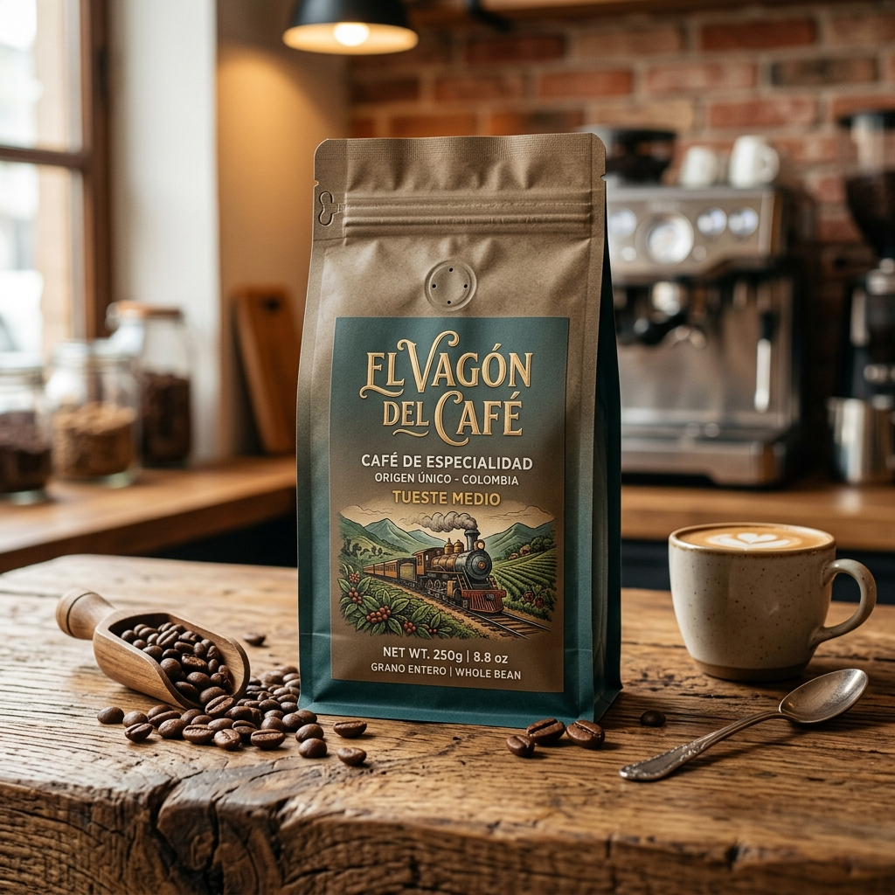

El más popular

Tueste Medio - Notas AchocolatadasPresentación Especial 250g
Ideal para uso individual o para probar la frescura de nuestro café de origen. Empaque con válvula desgasificadora.
- Peso Neto: 250 gramos
- Tipo de Molienda: Molido o En Grano
- Origen: Santo Domingo, Ant.
Precio Especial:
Comprar en MercadoLibre
$22.000
COP
Envío calculado en MercadoLibre